(modified from Jason Geller)
PSY504, Advanced Statistics in Psychology
Princeton University
2026-02-16
A gentle introduction to Bayesian inference
Fit, interpret, and report a Bayesian regression with brms
The process that produced your data.
Last semester: every simulation you wrote was a DGP.
Steps:
Pick a distribution.
Pick parameters.
Generate data.
Last week: logistic regression was a DGP
A model = a structure with free parameters.
Each choice of parameters → a different member of the family.
\[Y_i \sim \text{Normal}(\mu_i, \sigma), \quad \mu_i = \beta_0 + \beta_1 X_i\]
Linear model
\[ \begin{align} Y_i &\sim \text{Normal}(\mu_i, \sigma) \\ \mu_i &= \beta_0 + \beta_1 X_i \end{align} \]
Logistic model
\[ \begin{align} Y_i &\sim \text{Bernoulli}(p_i) \\ \text{logit}(p_i) &= \beta_0 + \beta_1 X_i \end{align} \]
Model structure:
you specify parameters
at each X, the parameters produce a different distribution
data gets drawn from it (the ~ ; captures randomness)
We fix the parameters. And generate data.
“If \(\beta_0 = 50\), \(\beta_1 = 0.3\), \(\sigma = 10\) — what grades would I see?”
r functions: rnorm(), rbinom()\(Y_i \sim \text{Binomial}(n, \theta)\) means you are sampling n points from:
\[p(Y = k \mid \theta) = \binom{n}{k}\theta^k(1-\theta)^{n-k}\]
Now you can ask questions like “If \(\theta = 0.6\) — what data/outcomes are possible, and how likely are they?”
These sum to 1. . . .
The probability of each outcome is covered.
You get a proper probability distribution.
This is \(p(\text{data} \mid \theta)\).
Consider 5 tosses.
Each row is DGP/ a member of the model family.
| 0 heads | 1 head | 2 heads | 3 heads | 4 heads | 5 heads | Row sum | |
|---|---|---|---|---|---|---|---|
| \(\theta = 0.2\) | .328 | .410 | .205 | .051 | .006 | .000 | 1.0 |
| \(\theta = 0.4\) | .078 | .259 | .346 | .230 | .077 | .010 | 1.0 |
| \(\theta = 0.5\) | .031 | .156 | .312 | .312 | .156 | .031 | 1.0 |
| \(\theta = 0.6\) | .010 | .077 | .230 | .346 | .259 | .078 | 1.0 |
| \(\theta = 0.8\) | .000 | .006 | .051 | .205 | .410 | .328 | 1.0 |
Every row sums to 1.
Each row is a probability distribution.
Say, you observed 3 heads out of 5 tosses.
Can you answer, “Which \(\theta\) produced the data?”
| 0 heads | 1 head | 2 heads | 3 heads | 4 heads | 5 heads | Row sum | |
|---|---|---|---|---|---|---|---|
| \(\theta = 0.2\) | .328 | .410 | .205 | .051 | .006 | .000 | 1.0 |
| \(\theta = 0.4\) | .078 | .259 | .346 | .230 | .077 | .010 | 1.0 |
| \(\theta = 0.5\) | .031 | .156 | .312 | .312 | .156 | .031 | 1.0 |
| \(\theta = 0.6\) | .010 | .077 | .230 | .346 | .259 | .078 | 1.0 |
| \(\theta = 0.8\) | .000 | .006 | .051 | .205 | .410 | .328 | 1.0 |
In reality, you don’t know. But you’re making an educated guess.
Inference = using the data to figure out which model parameters (row) likely produced it.
You observed 3 heads out of 5 tosses.
Which model parameterization produced these observations?
Here, data are fixed.
But, parameters are unknown.
Two strategies for guessing:
Fix the data.
In each row, ask: how often does one expect the outcome?
We observe 3 heads out of 5.
\(\theta = 0.6\) → score: 0.346
\(\theta = 0.5\) → score: 0.312
\(\theta = 0.2\) → score: 0.051
Higher score => that row explains the data better.
| 0 heads | 1 head | 2 heads | 3 heads | 4 heads | 5 heads | |
|---|---|---|---|---|---|---|
| \(\theta = 0.2\) | .051 | |||||
| \(\theta = 0.4\) | .230 | |||||
| \(\theta = 0.5\) | .312 | |||||
| \(\theta = 0.6\) | .346 | |||||
| \(\theta = 0.8\) | .205 | |||||
| Sum = 1.144 |
Data fixed at 3 heads.
Read down the column.
Peak at \(\theta = 0.6\). Maximum Likelihood Estimation (MLE) picks the max.
Sum = 1.144. The column is not a distribution!
You might also have observed 4 heads in 5 tosses
| 4 heads | |
|---|---|
| \(\theta = 0.2\) | .006 |
| \(\theta = 0.4\) | .077 |
| \(\theta = 0.5\) | .156 |
| \(\theta = 0.6\) | .259 |
| \(\theta = 0.7\) | .360 |
| \(\theta = 0.8\) | .410 |
MLE picks \(\theta = 0.8\). The true value is 0.5.
With just 5 flips MLE is noisy.
The best-scoring \(\theta\) isn’t necessarily the true \(\theta\).
Try to make a statement:
Forward: “There’s a 35% chance of getting 3 heads.” ✓
Backward: “There’s a **___% chance** that \(\theta\) is 0.6.” ?
We can’t fill in the blank yet.
The scores don’t add to 1.
We are looking for \(p(\theta \mid \text{data})\).
We want \(p(\theta \mid \text{data})\) — a distribution.
The likelihood finds the peak. That’s MLE.
But it can’t fill in the blank: “___% chance \(\theta\) is between 0.4 and 0.8.”
You’re flipping a coin — not rolling a die, not drawing cards.
Most coins are roughly fair. \(\theta\) is probably near 0.5.
\(\theta = 0.0\) or \(\theta = 1.0\)? Possible — but highly unlikely.
The likelihood doesn’t have this knowledge.
It just scores based on \(P(D|\theta_i)\)
Which \(\theta\) values are plausible — before you flip?
\[p(\theta)\]
“Most coins are fair-ish” → prior peaked near 0.5
“I have no idea” → flat prior, all \(\theta\) equally plausible
“This coin came from a magic shop” → prior allows extreme values
Unlike the likelihood — the prior is a distribution. Sums to 1.
\[p(\theta \mid \text{data}) \;\propto\; \underbrace{p(\theta)}_{\text{Prior}} \;\times\; \underbrace{L(\theta)}_{\text{Likelihood}}\]
Prior (distribution) × Likelihood (scoring function) = Posterior (distribution)
The posterior is \(p(\theta \mid \text{data})\).
Now you can fill in the blank.
3 heads out of 5. Flat prior. Multiply prior × likelihood at each \(\theta\):
| \(\theta\) | Prior | Likelihood | Prior × Likelihood | Posterior |
|---|---|---|---|---|
| 0.2 | .200 | .051 | .010 | .045 |
| 0.4 | .200 | .230 | .046 | .201 |
| 0.5 | .200 | .312 | .062 | .273 |
| 0.6 | .200 | .346 | .069 | .303 |
| 0.8 | .200 | .205 | .041 | .179 |
| Sum = .229 | 1.0 |
Prior × Likelihood doesn’t sum to 1. Divide each by the sum (.229) to normalize.
Posterior sums to 1. Now it’s a distribution.
“There’s a 30% chance \(\theta\) is 0.6.” The blank is filled.
\[p(\theta \mid \text{data}) \;\propto\; \underbrace{p(\theta)}_{\text{Prior}} \;\times\; \underbrace{L(\theta)}_{\text{Likelihood}}\]
Prior (distribution) × Likelihood (scoring function) = Posterior (distribution)
The full version:
\[p(\theta \mid \text{data}) = \frac{p(\theta) \times L(\theta)}{\sum_{\theta} p(\theta) \times L(\theta)}\]
The denominator just makes it sum to 1.
3 heads out of 5. But now: “most coins are roughly fair.”
| \(\theta\) | Prior | Likelihood | Prior × Likelihood | Posterior |
|---|---|---|---|---|
| 0.0 | .010 | .000 | .000 | .000 |
| 0.1 | .040 | .008 | .000 | .001 |
| 0.3 | .200 | .132 | .026 | .102 |
| 0.5 | .400 | .312 | .125 | .483 |
| 0.6 | .250 | .346 | .086 | .334 |
| 0.8 | .100 | .205 | .020 | .079 |
| Sum = .258 | 1.0 |
MLE picked \(\theta = 0.6\). The posterior peaks at \(\theta = 0.5\).
The prior pulled the estimate toward “fair.” Data alone said 0.6. Prior knowledge said “probably near 0.5.” The posterior is a compromise.
Prior \(p(\theta)\)
Belief before data
Distribution ✓
Likelihood \(L(\theta)\)
What data say
Not a distribution ✗
Posterior \(p(\theta \mid \text{data})\)
Updated belief
Distribution ✓
In principle — just multiply prior × likelihood at every \(\theta\).
But most models in practice have continuous parameters — every \(\theta\) between 0 and 1.
\[p(\theta \mid \text{data}) = \frac{p(\theta) \times L(\theta)}{\int p(\theta) \times L(\theta) \, d\theta}\]
The denominator integrates over every possible \(\theta\).
1 parameter → easy.
3 → hard.
20 → forget it.
Solution: don’t compute it. Sample from it. . . . Probabilistic programming languages let you do this more easily.
We can’t write down \(p(\theta \mid \text{data})\) as a formula.
But we can generate thousands of \(\theta\) values that behave as if they came from it.
Imagine drawing 10,000 values of \(\theta\) from the posterior:
The histogram of those draws is the posterior.
We can compute probabilities now without the formula/ without knowing the likelihood function!
| MLE | Bayes | |
|---|---|---|
| Point estimate | ✓ (peak) | ✓ (posterior mean/median) |
| Uncertainty | SE from curvature | Full distribution |
| Probability statements | ✗ | “95% chance β₁ ∈ [0.1, 0.5]” |
| Prior knowledge | ✗ | ✓ |
| Small samples | Unstable (due to sampling error) | Priors stabilize estimates |
| Evidence FOR null | ✗ | ✓ (Bayes Factors) |
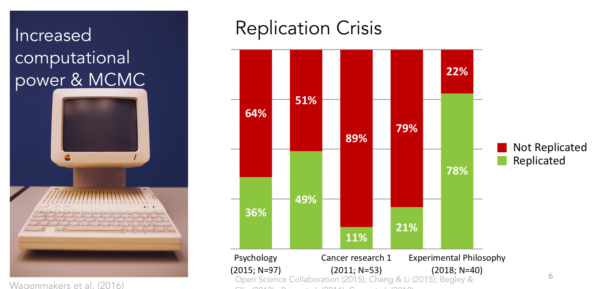
Technology
brms, Stan)Frustration
Google “Bayesian” → philosophical wars
Subjective vs. objective. Frequentist vs. Bayesian.
Interesting. Not our focus.
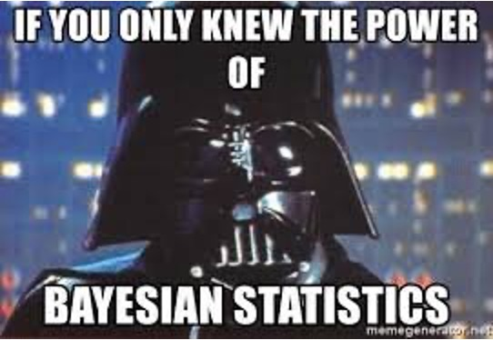
Frequentist
Probability = long-run frequency.
“If I repeated this experiment forever, 60% of the time I’d get heads.”
. . .
Parameters are fixed but unknown.
Data are random.
Only data get probability statements.
Bayesian
Probability = degree of belief.
“I’m 60% sure this coin is biased toward heads.”
. . .
Parameters are uncertain — they get distributions.
Data are fixed (you observed them).
Parameters get probability statements.
Let’s watch Bayes’ rule work — step by step.
What proportion of people are dog people?
Same structure as the coin — just a different question.
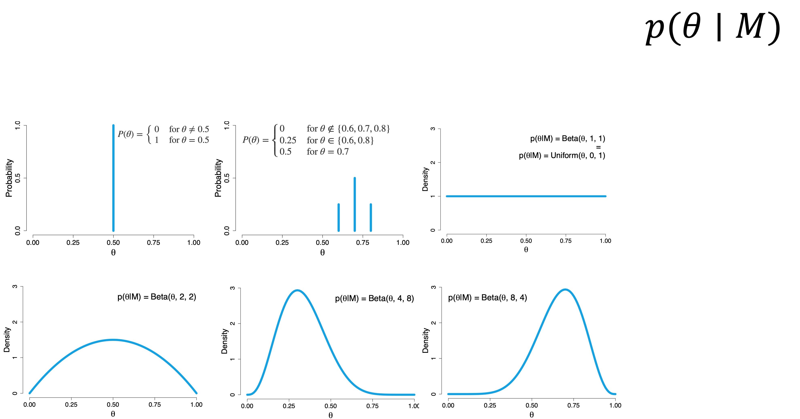
People vary in how strongly they state prior beliefs.
Most researchers use weakly informative priors.
Before seeing data — what does each model predict?
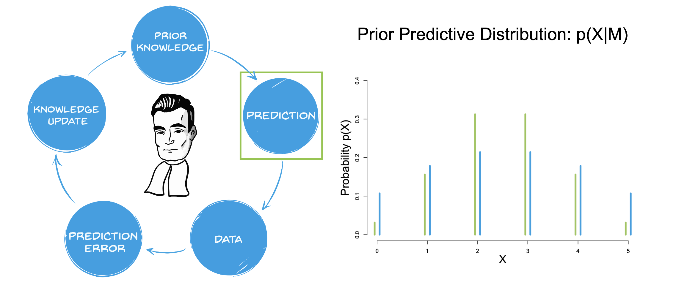
Narrow prior → specific predictions.
Wide prior → anything is plausible.
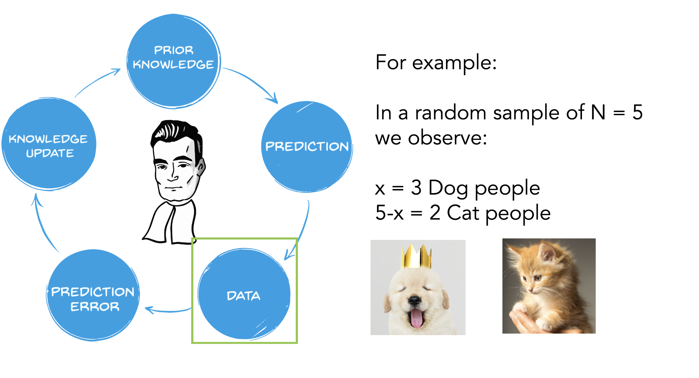
3 out of 5 are dog people.
Everything before this happened without data.
Now we update.
The marginal likelihood — how plausible is the observed data under each model?
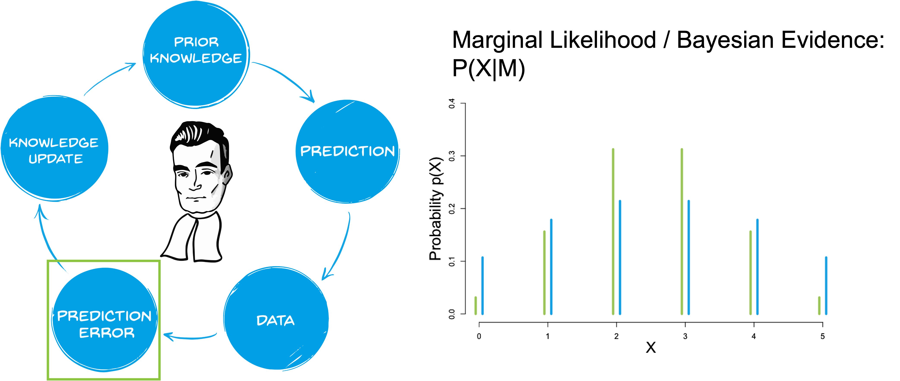
Go back to each model’s predictions. Evaluate at the observed data.
The ratio of these = the Bayes Factor.
How much did the data change your mind?
\[BF_{12} = \frac{P(\text{data} \mid M_1)}{P(\text{data} \mid M_2)}\]
Unlike p-values — BFs can provide evidence for the null.
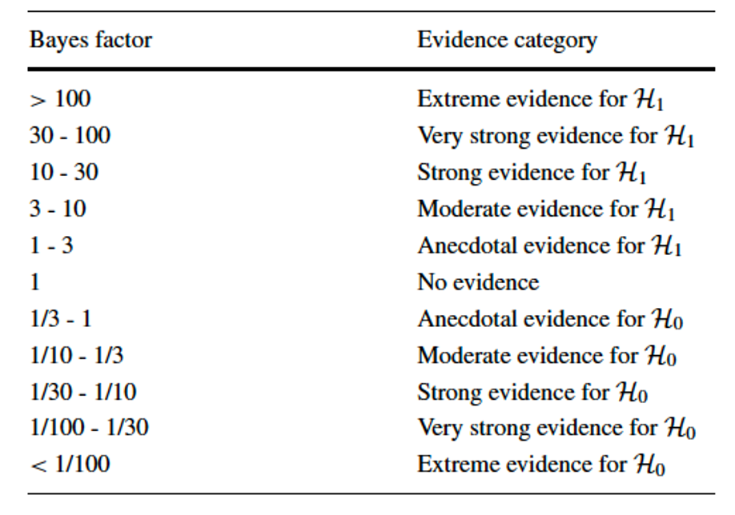
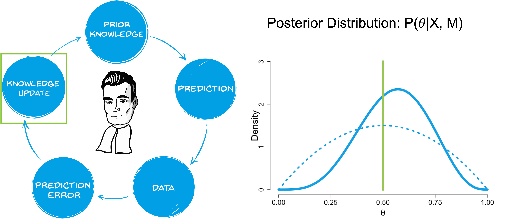
The wide prior (blue) gets reshaped — narrower, pulled toward the data.
The spike prior (green) doesn’t budge.
If you rule something out completely, no data can bring it back.
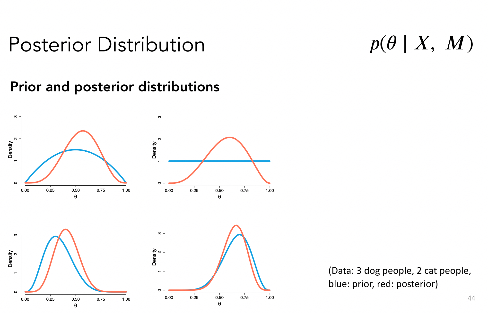
The posterior sits between prior and likelihood.
With more data — pulled toward the likelihood.
With less data — stays closer to the prior.
The posterior gives you what you always wanted from confidence intervals:
“With 95% probability, \(\theta\) lies within this interval.”
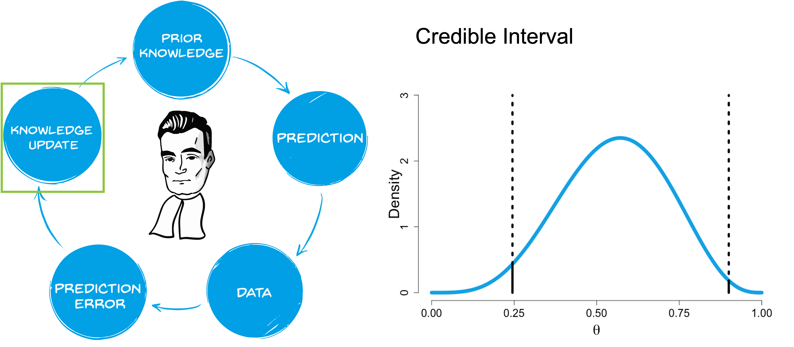
This is a direct probability statement about the parameter.
Not “if we repeated the experiment…”
| Coin | Regression | |
|---|---|---|
| Model | \(Y \sim \text{Binomial}(n, \theta)\) | \(Y \sim \text{Normal}(\mu_i, \sigma)\) |
| Parameters | \(\theta\) | \(\beta_0, \beta_1, \sigma\) |
| Prior | \(p(\theta)\) | \(p(\beta_0), p(\beta_1), p(\sigma)\) |
| Likelihood | Score each \(\theta\) | Score each \((\beta_0, \beta_1, \sigma)\) |
| Posterior | \(p(\theta \mid \text{data})\) | \(p(\beta_0, \beta_1, \sigma \mid \text{data})\) |
More parameters. Same recipe.
brms handles all of it.
Same idea — many parameters, score each combination.
The linear model has one too — swap in dnorm().
\[Y_i \sim \text{Normal}(\mu_i, \sigma), \quad \mu_i = \beta_0 + \beta_1 X_i\]
Say \(\beta_0 = 50\), \(\beta_1 = 0.3\), \(\sigma = 10\):
dnorm(65, mean = 59, sd = 10) ≈ 0.03Do this for every student. Multiply. That’s the likelihood.
Different parameters → different score.
Same logic as the coin — just different parameters.
MLE ignores all of this. Bayes encodes it.
You have to identify:
People argue about priors
Where do they come from?
Priors differ in how informative they are
Priors differ in how ‘proper’ they are
Creates camps:
Informative Priors (“Subjective Bayesians”)
Non-informative Priors (“Objective Bayesians”)
Weakly-informative priors (“WIP”; Most Bayesians)
People vary in how strongly they state their prior beliefs
If you state your belief strongly
If you state your belief weakly
Prior odds
\[\frac{p(M1)}{p(M2)}\]
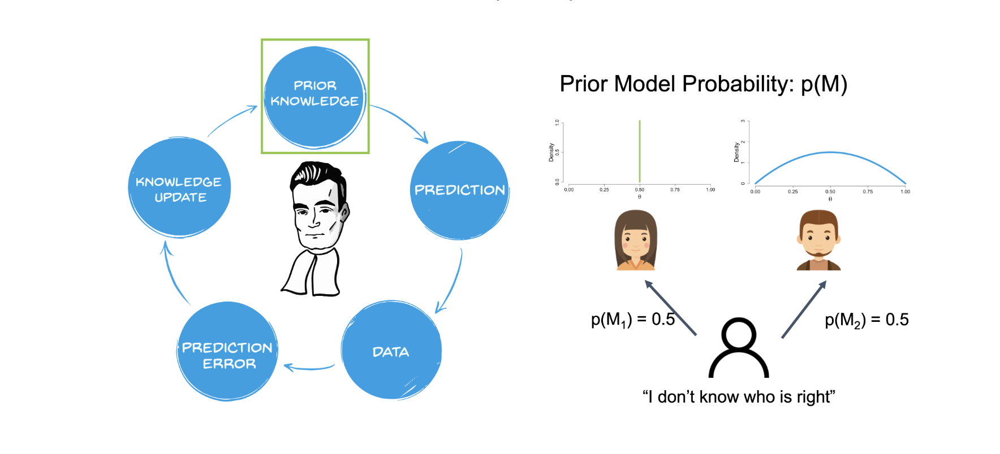
Prior prediction distribution
Makes a prediction about plausibility of the data
Marginal Likelihood
How plausible are the observed data under the model?
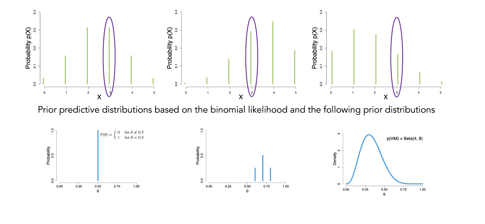
Frequentists have p values
Bayesians have Bayes factors (BF)
Tells you how much more likely the observed data are under one model than under another model
Can be interpreted as degree of relative evidence for a model
\[\text{Bayes factor} (BF) = \frac{P(\mathcal{D}|M_1)}{P(\mathcal{D}|M_2)}\]
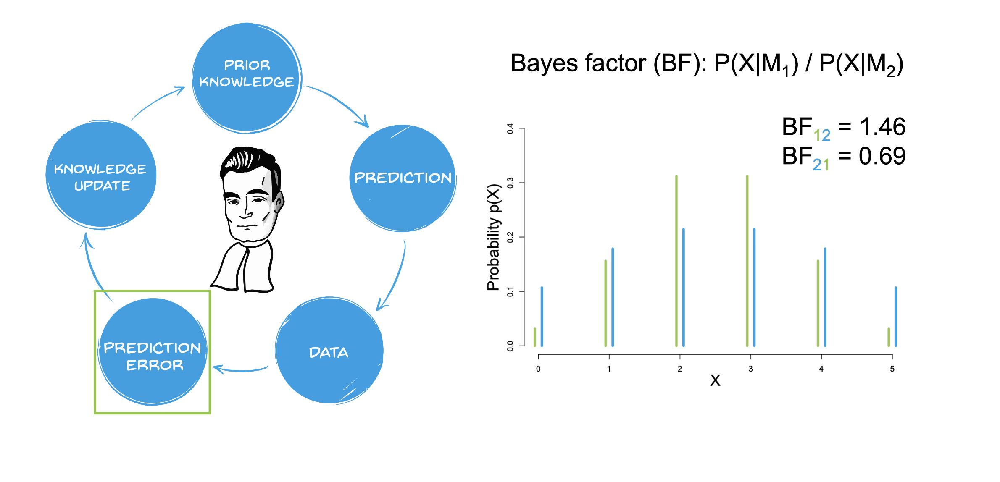
\(BF_{12}\) > 1: More evidence for M1
\(BF_{12}\) < 1: More evidence for M2
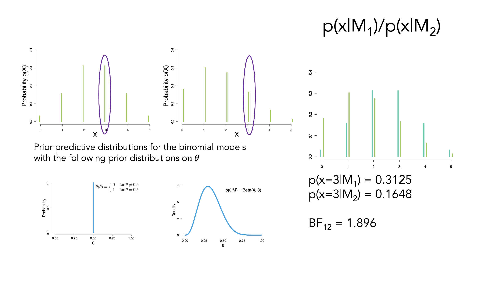
How convincing is the evidence that M1 is better than M2?
Posterior
Credible intervals (Highest Density Intervals)
Give us a way to express the uncertainty in estimating parameter values
Provide a range within which we believe the true value of a parameter lies, with a certain probability
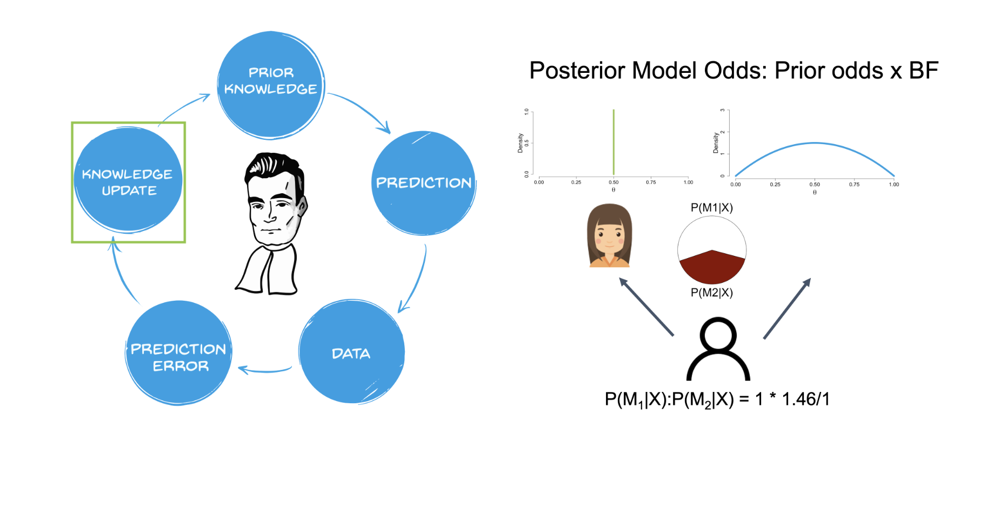
Bayesian data analysis
(what we’re doing)
A tool for analyzing data.
Bayes’ rule used estimate parameters from your experiment.
The model describes your data.
Bayesian models of cognition
(Griffiths, Tenenbaum, etc.)
A theory of how people think.
The claim: human minds use something like Bayes’ rule to learn and make decisions.
The model describes cognition.
You can use Bayesian data analysis without committing to the Bayesian Brian hypothesis!
The claim: people behave as if they do Bayesian inference.
Does synchronous attendance and average viewing matter in hybrid courses?
33 students in Fall 2020 statistics course
Looked at:
Grade Final course grade: Min: 30 Max: 97
sync Mode of attendance: (0=asynchronous; 1=synchronous)
avgView Average standardized viewing time for recorded lectures: in minutes
avgView plot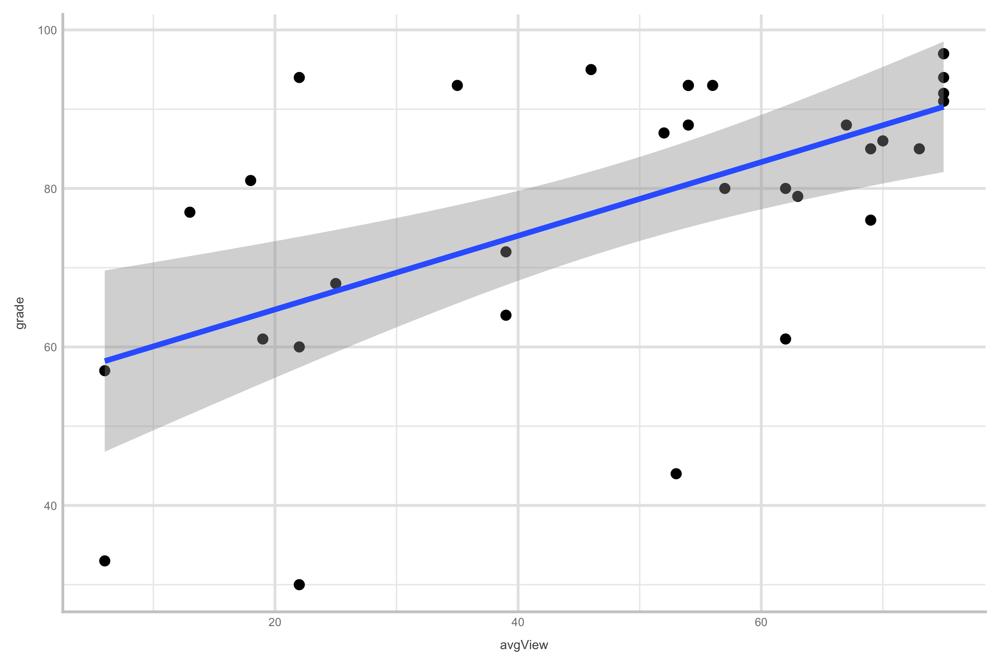
sync plot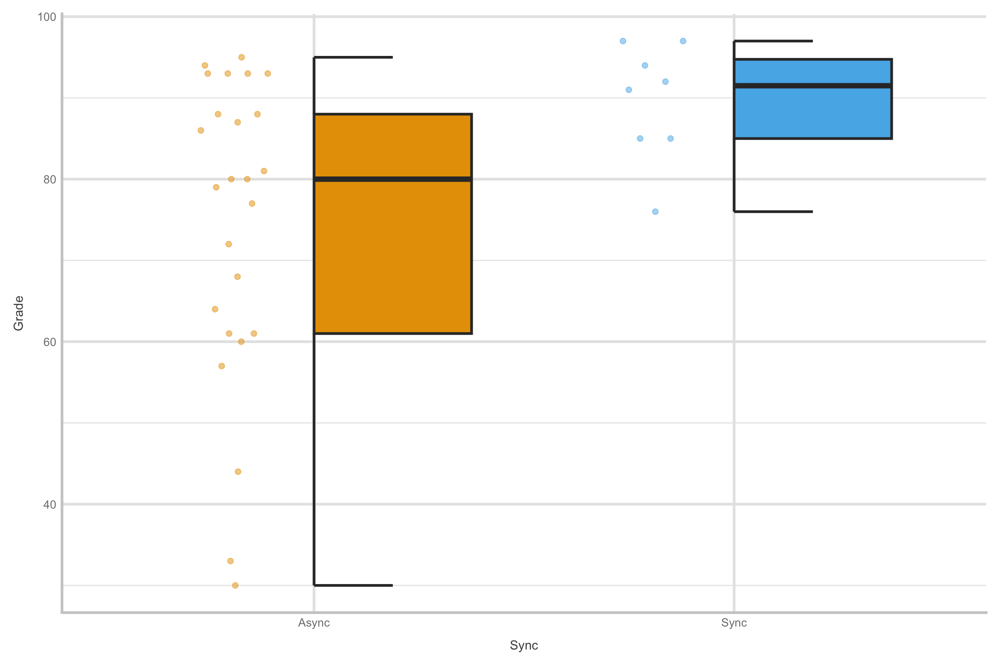
brmsbrms)Markov chain Monte Carlo (MCMC) sampler!
Given possible priors and your data, a computer uses a Monte Carlo sampling technique to build stochastic Markov Chains, a process referred to as MCMC
We run multiple chains (e.g., 4 chains in brms) with equal numbers of iterations (e.g., 5000 iterations) in each chain to estimate convergence/stability
MCMC chains contain samples from the posterior distribution of the theory given the data
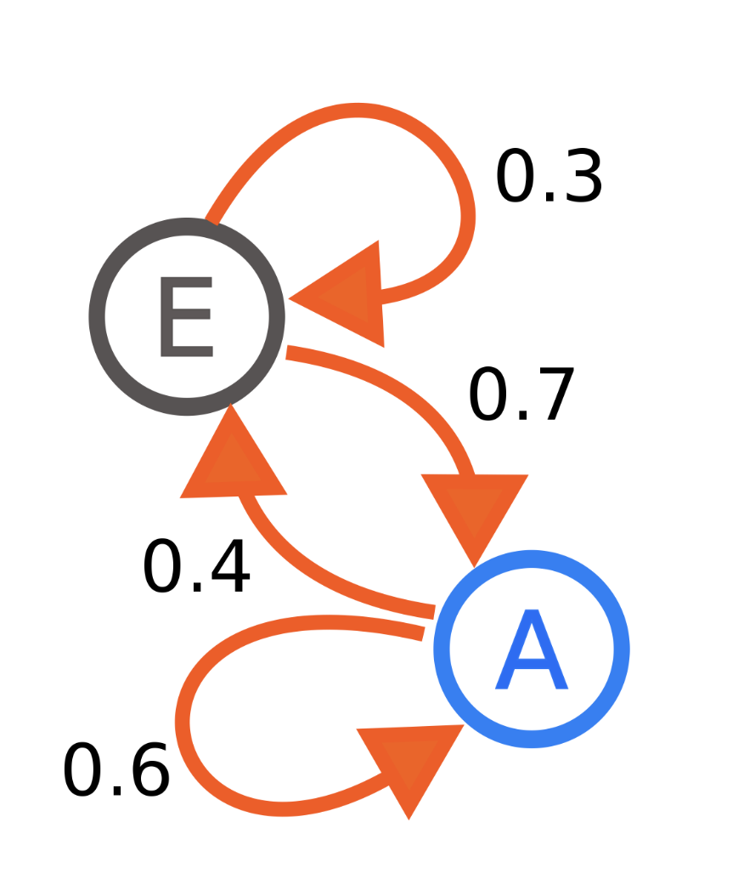
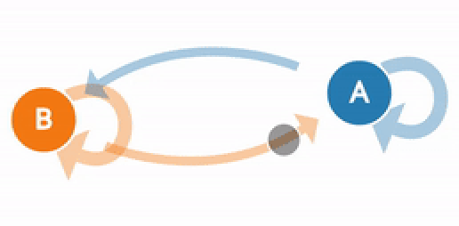
Chain of discrete events, moving forward in time
Memoryless
Issue: they can stay the same/loop
Trace plots
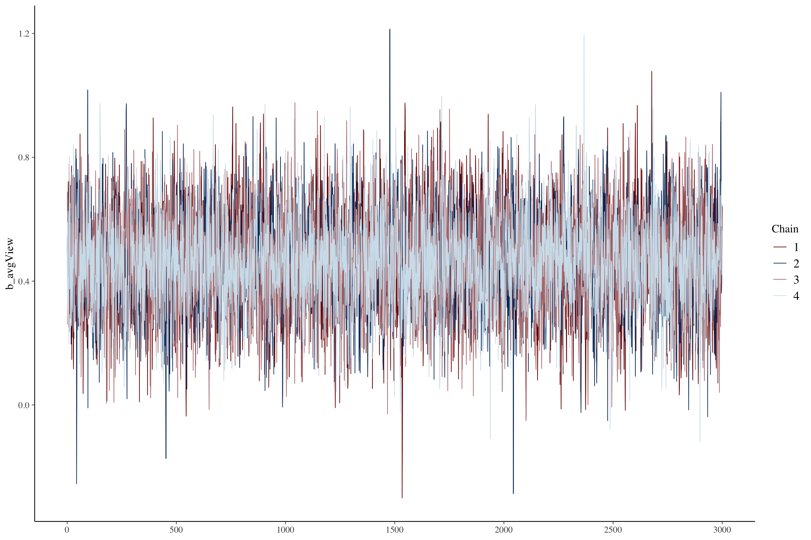
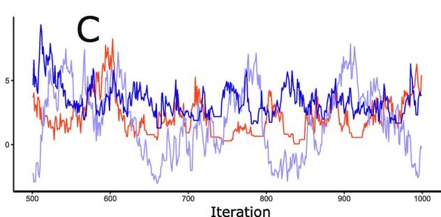
| Parameter | Rhat | ESS | MCSE |
|---|---|---|---|
| b_avgView | 1 | 9942.678 | 0.002 |
| b_Intercept | 1 | 9295.640 | 0.096 |
| b_sync_cont | 1 | 9432.580 | 0.083 |
\(\hat{R}\)
Measure of consistency of Markov chains
Ratio of variance (like F test)
| Parameter | Rhat | ESS | MCSE |
|---|---|---|---|
| b_avgView | 1 | 9942.678 | 0.002 |
| b_Intercept | 1 | 9295.640 | 0.096 |
| b_sync_cont | 1 | 9432.580 | 0.083 |
Effective sample size (ESS)
Number of independent pieces there is in autocorrelated chains (Krushke, 2015, p182-3)
ESS should be > 1000
prior class coef group resp dpar nlpar lb ub tag
(flat) b
(flat) b avgView
(flat) b sync_cont
student_t(3, 85, 11.9) Intercept
student_t(3, 0, 11.9) sigma 0
source
default
(vectorized)
(vectorized)
default
defaultNote
Non-informative priors will give you essentially same results as a frequentist analysis
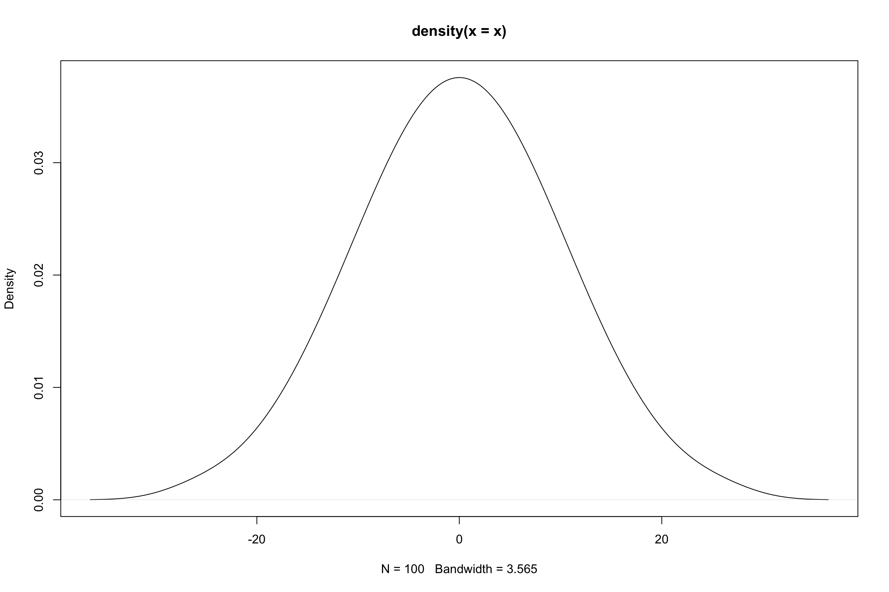
Cauchy(mean=0, width=.707)
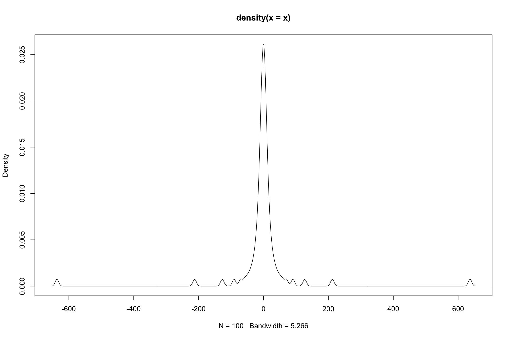
# set prior using prior function
# these priors are not good and only for demo
prior1 <- prior(cauchy(0, .707), class=b)
prior2 <- prior(normal(0, 10), class = b)
prior3 <- prior(normal(0, .51), class = b)
#include prior
# only sample from prior so we can plot it and look
brm_class_prior <- brm(grade~avgView, data=data,
sample_prior="only", #use this to check prior pulls
prior=prior2, # add in prior information
family= gaussian(),
warmup = 2000,
iter = 5000)
# check priorA point-estimate which is a one-value summary (similar to the \(\beta\) in frequentist regressions)
A credible interval representing the associated uncertainty
Some indices of significance, giving information about the relative importance of this effect (e.g., Bayes Factors)
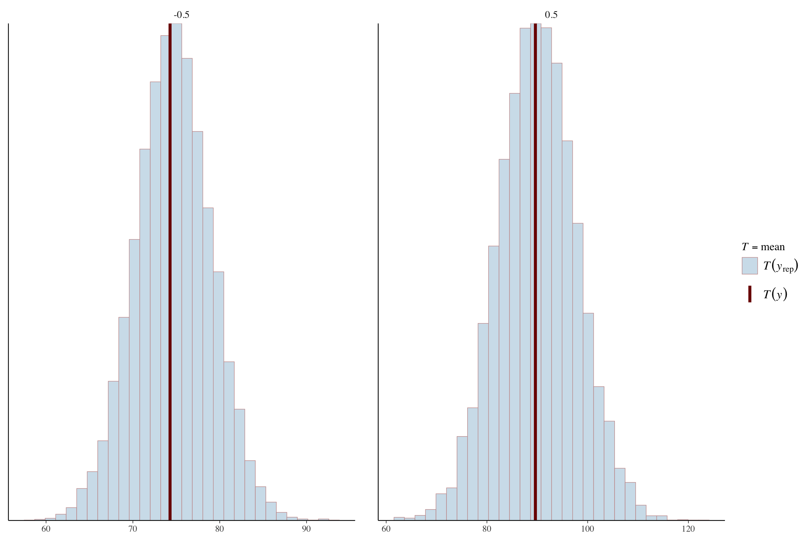
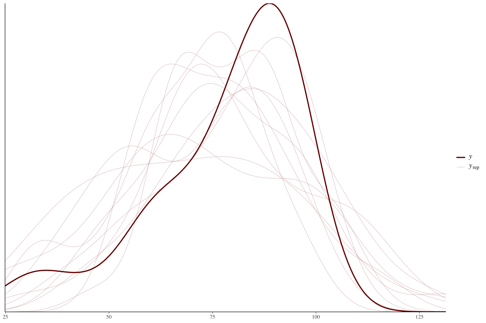
| Parameter | Component | Median | CI | CI_low | CI_high | pd | Rhat | ESS |
|---|---|---|---|---|---|---|---|---|
| b_Intercept | conditional | 56.1613778 | 0.95 | 37.8455794 | 74.7498687 | 1.0000000 | 0.9999064 | 9295.640 |
| b_avgView | conditional | 0.4611138 | 0.95 | 0.1578119 | 0.7608542 | 0.9979167 | 0.9998884 | 9942.678 |
| b_sync_cont | conditional | 0.2094122 | 0.95 | -15.6093363 | 16.2831811 | 0.5125833 | 1.0000791 | 9432.580 |
| sigma | sigma | 15.1908818 | 0.95 | 12.0623516 | 19.9324049 | 1.0000000 | 1.0002608 | 9627.741 |
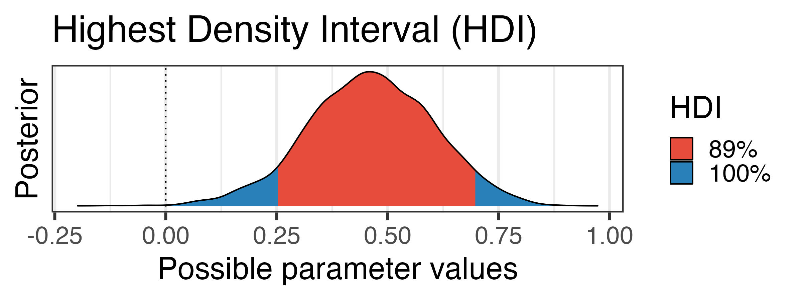
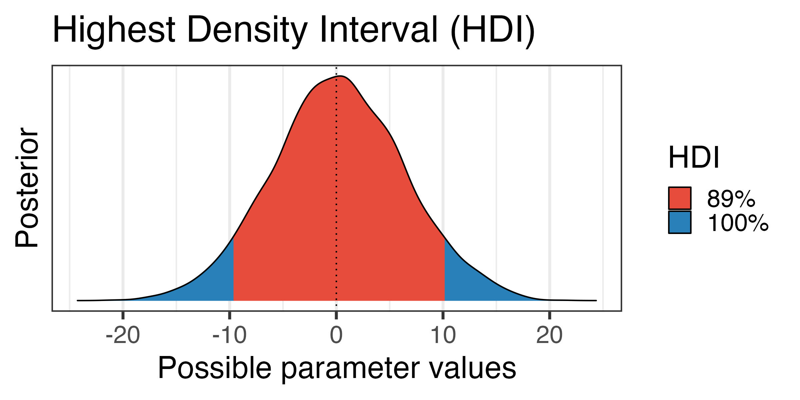
avgView#get predictions from margainaleffects
pred <- predictions(brm_class1,
newdata = datagrid(
avgView = seq(6, 75, by = 5))) %>%
posterior_draws()
pred_fig <- ggplot(pred, aes(x = avgView, y = draw)) +
stat_lineribbon() +
scale_fill_brewer(palette = "Reds") +
labs(x = "Average Watch Time (min)",
y = "Grades (predicted)",
fill = "")sync#| eval: false
#|
pred <- avg_predictions(brm_class1, variables = "sync_cont") %>% posterior_draws()
pred$sync_cont<-as.factor(pred$sync_cont)
ggplot(pred, aes(x = draw, y = sync_cont, fill = sync_cont)) +
stat_halfeye(.width=c(.8, .95)) +
scale_fill_viridis_d(option = "plasma", end = 0.8) +
guides(fill = "none") +
labs(x ="Class", y = "Grades",
caption = "80% and 95% credible intervals shown in black") +
theme_lucid(base_size=25)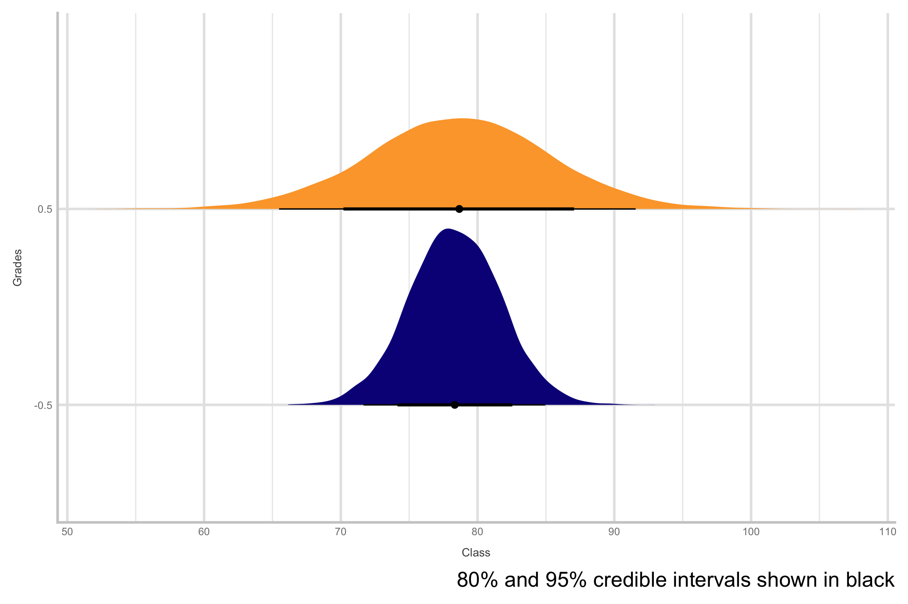
#| echo: false
pred <- avg_predictions(brm_class1, variables = "sync_cont") %>% posterior_draws()
pred$sync_cont<-as.factor(pred$sync_cont)
ggplot(pred, aes(x = draw, y = sync_cont, fill = sync_cont)) +
stat_halfeye() +
scale_fill_viridis_d(option = "plasma", end = 0.8) +
guides(fill = "none") +
labs(x ="Class", y = "Grades",
caption = "80% and 95% credible intervals shown in black") +
theme_lucid(base_size=25)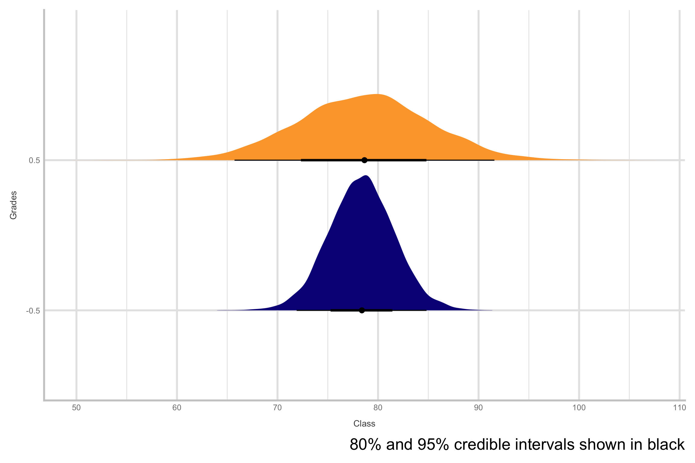
bayestestR from easystats| Parameter | Component | Median | Mean | MAP | CI | CI_low | CI_high | pd | Rhat | ESS | |
|---|---|---|---|---|---|---|---|---|---|---|---|
| 2 | b_Intercept | conditional | 56.1613778 | 56.0970912 | 56.5139126 | 0.95 | 37.8455794 | 74.7498687 | 1.0000000 | 0.9999064 | 9295.640 |
| 1 | b_avgView | conditional | 0.4611138 | 0.4611242 | 0.4688246 | 0.95 | 0.1578119 | 0.7608542 | 0.9979167 | 0.9998884 | 9942.678 |
| 3 | b_sync_cont | conditional | 0.2094122 | 0.3261923 | -0.3264964 | 0.95 | -15.6093363 | 16.2831811 | 0.5125833 | 1.0000791 | 9432.580 |
| 4 | sigma | sigma | 15.1908818 | 15.3884164 | 14.8639813 | 0.95 | 12.0623516 | 19.9324049 | 1.0000000 | 1.0002608 | 9627.741 |
Note
probability of direction (pd) is pretty cool!
It tells us how much of the distribution is completely positive or negative.
It is correlated with p values!
Does the credible interval for avgView contain 0?
If yes, “not significant”
If no, “significant”
Does the credible interval for sync_cont contain 0?
If yes, “not significant”
If no, “significant”
marginaleffects or emmeans to get mean differences between variablesAdding prior to our model
Can compare model parameters to determine if effect is 0 (or some other value)
Use bayesfactor_parameter function to test a model with the observed effect to a model with the effect at 0
Bayes Factor (Savage-Dickey density ratio)
Parameter | BF
----------------------
(Intercept) | 2.82e+03
avgView | 1.61
sync_cont | 0.622
* Evidence Against The Null: 0bayestestR::bayesfactor_models to get a BF for full models selection# Model 1: grade ~ sync + avgView
#save_pars for bayes factors
brm_class1 <- brm(grade~avgView + sync, data=data , family = gaussian(), prior=prior2, sample_prior="yes", save_pars = save_pars(all=TRUE), warmup = 2000, iter = 5000)
#grade ~ avgView
brm_class2 <- brm(grade~avgView, data=data, prior=prior2, family = gaussian(), sample_prior="yes", save_pars = save_pars(all=TRUE),
warmup = 2000, iter = 5000)Bayes Factors for Model Comparison
Model BF
[2] avgView 1.62
* Against Denominator: [1] avgView + sync
* Bayes Factor Type: marginal likelihoods (bridgesampling)avgview only model is 15 times more likely than a model withBayes Factor (Savage-Dickey density ratio)
Parameter | BF
----------------------
(Intercept) | 3.55e+06
avgView | 11.70
* Evidence Against The Null: 0Do my students’ course grades depend on mode of attendance and average viewing time?
Only avgView
BF favored a model with only avgView
Weak evidence for an effect of mode of attendance
Include which prior settings were used
Justify the prior settings (particularly for informed priors in a testing scenario)
Include a plot of the prior and posterior distribution
Report the posterior mean/median and x% credible intervals
If relevant, report the results from both estimation and hypothesis testing
Include BFs for model comparisons or parameters (sensitivity analysis)
Include model convergence diagnostics (trace plot, \(\hat R\), ESS)
#~~
Bayesian inference allows you to make direct probability statements for things that you are interested in
Quantify the amount of support for one hypothesis relative to another
It allows you to incorporate prior information you have in a formal way (via the prior distribution)
Sample size does not affect estimates as much as it does the likelihood
Priors (can be good and bad)
Computationally intensive
Ban questionable research practices (e.g., HARKing)
Provide a remedy for:
Small sample sizes
Unrepresentative samples
Poor experimental design
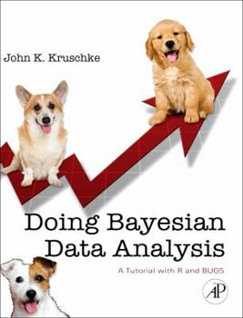
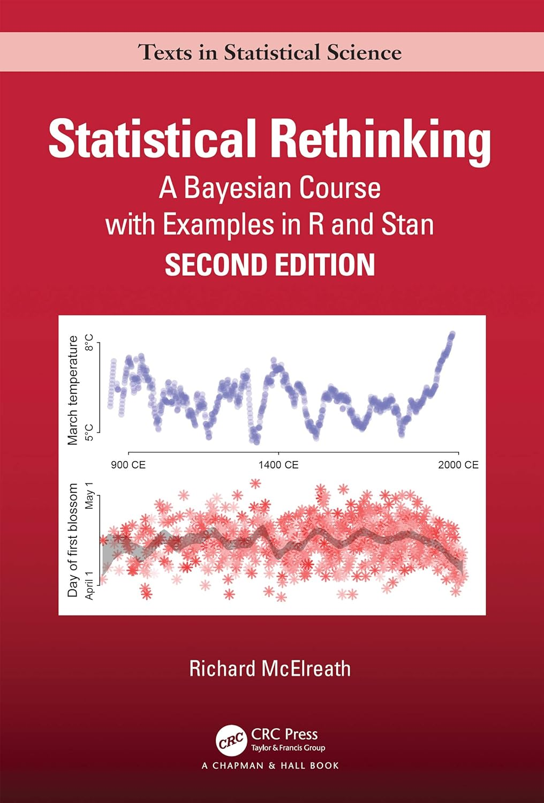
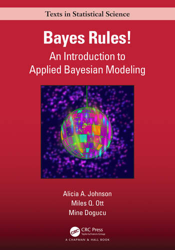
Free online textbook
PSY 504: Advanced Statistics